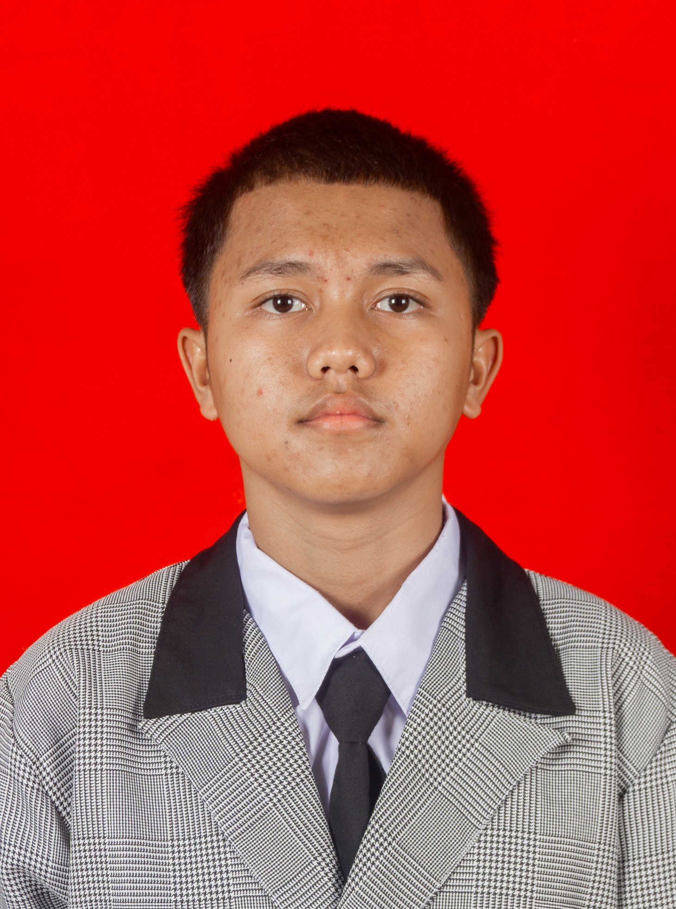
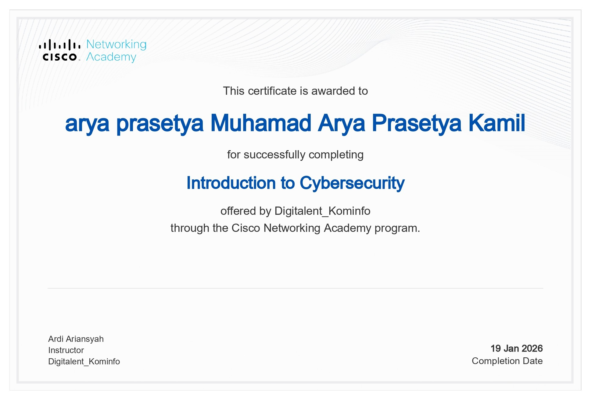

Muhamad Arya Prasetya Kamil
Cybersecurity & Networking Specialist
Seorang profesional IT pemula yang berfokus pada Keamanan Siber (Cybersecurity) dan Infrastruktur Jaringan. Memiliki sertifikasi resmi dari Cisco Networking Academy yang memvalidasi kemampuan teknis dalam mengamankan sistem dan mengelola jaringan komputer secara andal.
Keahlian Teknis
Cybersecurity Essentials
Network Security
Cisco Networking
Troubleshooting
HTML / CSS (Web Design)
Proyek Unggulan
Secure Corporate Network Architecture
Merancang topologi jaringan perusahaan skala menengah yang aman menggunakan Cisco Packet Tracer. Menerapkan segmentasi jaringan VLAN, keamanan port (Port Security), Inter-VLAN Routing, serta konfigurasi Access Control List (ACL) untuk membatasi hak akses data sensitif.
Vulnerability Assessment & Hardening
Melakukan simulasi pengujian celah keamanan sistem jaringan lokal (Penetration Testing) berskala laboratorium. Melakukan scanning port terbuka menggunakan Nmap, analisis risiko keamanan, dan melakukan pengerasan sistem (hardening) untuk mencegah serangan siber.
Intrusion Detection System Deployment
Konfigurasi dan pemantauan sistem pendeteksi ancaman jaringan otomatis (IDS) untuk menganalisis lalu lintas data berbahaya. Berfokus pada identifikasi aktivitas mencurigakan seperti Brute Force dan DoS Attack demi menjaga integritas data jaringan.
Sertifikasi Resmi

Cybersecurity Essentials
Diterbitkan oleh: Cisco Networking Academy / Digitalent Kominfo

Sertifikat Kompetensi BNSP
Diterbitkan oleh: Cisco Networking Academy / BNSP

Sertifikat Jaringan Cisco
Diterbitkan oleh: Cisco Networking Academy

Sertifikasi Kompetensi TIK
Diterbitkan oleh: BNSP / Lembaga Terkait

Professional Certification
Diterbitkan oleh: Cisco Networking Academy / Kominfo